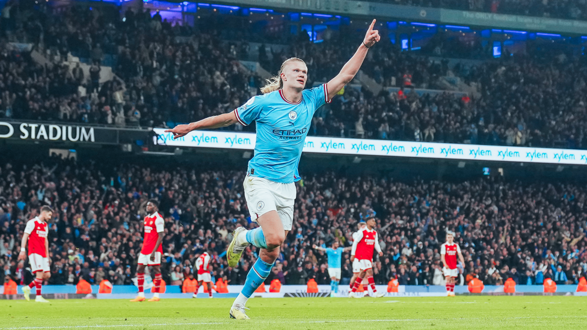

他不是传统意义上细腻的组织者，而是把比赛推向终点的人。
哈兰德的成长轨迹很清晰：挪威青训给了他职业起点，萨尔茨堡让欧洲看到他的爆发，多特蒙德证明他能持续高产，曼城则把他的终结能力放进一个创造力极强的体系里。
Manchester City No. 9
从布吕讷的少年中锋，到曼城进球机器。速度、力量、跑位和禁区终结，组成他的比赛语言。
埃尔林·布劳特·哈兰德出生于英格兰利兹，三岁后回到挪威布吕讷成长。他从五岁进入布吕讷青训，后来经历莫尔德、萨尔茨堡红牛、多特蒙德，最终在 2022 年来到曼城。
他的特点并不复杂，却极难防守：1.95 米的身高、强大的冲刺能力、禁区内的第一时间处理，以及对落点和防线身后的敏锐判断，让他成为现代足球里最直接的终结答案之一。
和许多需要大量持球参与的前锋不同，哈兰德的存在感常常来自“等待”。他会在很长时间里看似远离镜头，然后突然用一次前插、一次抢点或一次身体对抗改变比分。
哈兰德的成长轨迹很清晰：挪威青训给了他职业起点，萨尔茨堡让欧洲看到他的爆发，多特蒙德证明他能持续高产，曼城则把他的终结能力放进一个创造力极强的体系里。
他的父亲阿尔夫-因格·哈兰德曾效力曼城和利兹联，这让哈兰德从小就接触职业足球环境。回到挪威后，他在布吕讷成长，早早进入本地俱乐部青训。
身高和力量是他的底色，但真正让他可怕的是启动时机。他常常先藏在中卫肩侧，再用短距离冲刺抢到第一落点。
哈兰德的射门选择非常直接：能一脚完成就不多带，能靠近球门就不选择复杂角度。这种简洁让他的效率长期维持在高位。
曼城拥有大量传球手和边路创造者。哈兰德并不需要改变球队的控球习惯，他更像体系里的终点，把不断出现的半机会转化成确定性。
曼城官方用“100 goals, 100 photos”记录了他的百球节点，从首秀双响一路写到新的里程碑。
2022-23 赛季各项赛事 52 球，帮助曼城赢下三冠王，也刷新了英格兰顶级前锋的效率想象。
英超首季打入 36 球，创造单赛季进球纪录，并拿下英超金靴。
哈兰德来到曼城后，最特别的地方不是参与每一次传导，而是把等待变成威胁。他经常只在关键区域出现几秒，却能用跑位把整条防线拉开。

官方百球图库把他的进球拆成左脚、右脚、头球、点球和禁区内终结。对他来说，复杂动作不是重点，第一时间完成射门才是答案。
在曼城，他是传控体系最后的一步。德布劳内、福登、格拉利什和边路传中创造空间，哈兰德则负责把机会变成比分。
当进球数量足够大时，它就不再只是数据，而会变成一段可以被整理、回看和收藏的球队记忆。百球图库正是这种记忆的入口。
这里后续放官方图片包中的代表性照片。
从家乡俱乐部青训走向职业赛场。
在挪威顶级联赛逐渐完成中锋转型。
欧冠首秀帽子戏法，让欧洲开始记住他。
在德甲保持高速进球，成为豪门争抢对象。
把球队创造力转化为稳定产量。
父亲阿尔夫-因格·哈兰德曾在英超踢球，哈兰德出生在利兹，但童年足球真正开始于挪威布吕讷。
少年时期的他不只踢足球，也接触手球、高尔夫、田径，这些经历让他的协调性和爆发力更突出。
2019 年欧冠小组赛，他用帽子戏法和连续进球把名字推到欧洲中心。
在德甲，他把身体优势、前插时机和左脚终结结合起来，成为欧洲最可怕的新生代中锋。
来到曼城后，他不需要触球很多，却总能在最危险的区域出现，把传中、直塞和二点球变成进球。
官方百球图库把他的进球分解成左脚、右脚、头球、点球和庆祝动作，也让这个页面可以继续做成“进球博物馆”。